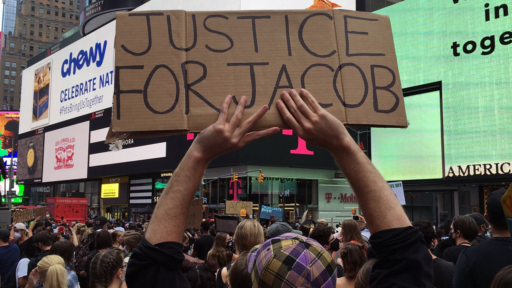

Five Largest Protest in U.S History

The tradition of protest that demand progressive change in the United States continue.
Here are the country's five of the top protest in term of attendance:
- George Flyod protest nationwide in 2020 with an estimated 26 million protestors.
- Women's March in 2017 drew about 5.6 million people nationwide.
- March for Our Lives, a student led protest in 2018 againt gun violence, drew about 2 million people.
- Women's March in 2018 drew about 1.5 million protestors.
- March on Washington for Lesbian, Gay, and Bi Equal Rights and Liberation drew about 1 million people in 1993.
Compiled from wikipedia